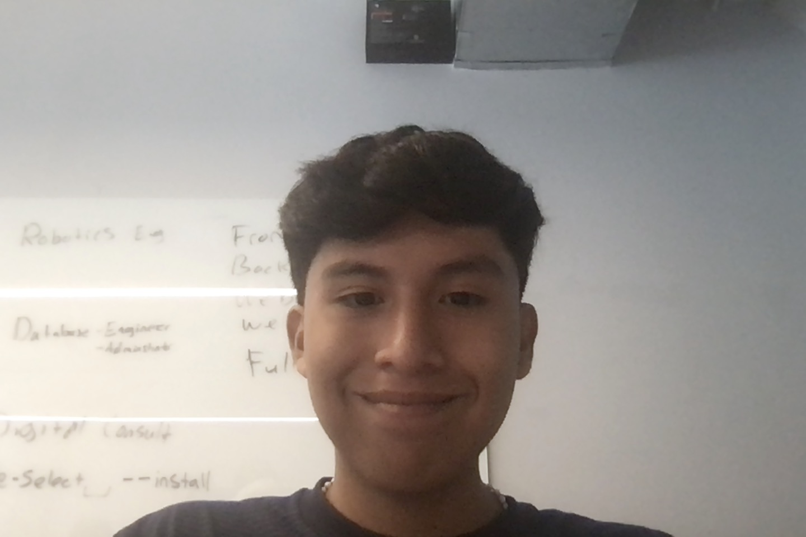

Anthony Tamayo
My Name is Anthony Tamayo and I am a senior at the Brooklyn steam center. I am Born and raised in Brooklyn and I'm 17 years old at the moment, I Currently attend George Westinghouse High school. I have 3 siblings which includes a older brother and two younger sisters. I got my interest in the tech industry through game development which then sparked my interest towards programming languages. So far in my junior year in steam I have attained the OSHA 10 General industry Certification and the It Specialist Networking Certification. In terms of experience I have attended a cybersecurity externship and also participated in a 6 week CTE internship in the summer which I believe improved my work experience. I am looking forward to my final year at the steam center where I fulfill myself.
